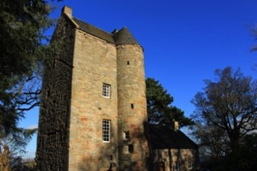
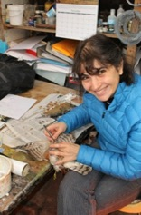

A collection of fairly random pictures, showing a few of the things we get up to in the lab
Costa Rica Wren Fieldwork 2015
Scotland Tit Fieldwork 2014
Helen and Alberto graduate
The venue: 14th Century Cramond Tower
Nora digs into the sparrowhawk
Nora gets a lesson from George Jamieson
Chris puts the finishing touches on the sparrowhawk
drying buzzard and sparrowhawk
group shot, showing off the spoils of our efforts




Taxidermy lessons in Edinburgh
ABS 2015: Anchorage Alaska